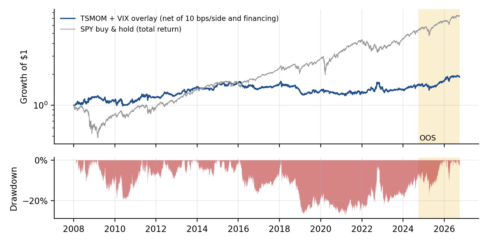

python strategy/run_all.py --oosWe trade ten liquid ETFs (equities, Treasuries, gold, commodities, the US dollar and REITs) in the direction of each asset's own 12-month return, sized to equal volatility, rebalanced monthly, and executed one day after the signal at 10 bps per side. An extension cuts exposure in half when the VIX closes above 30. Every rule was committed to git (commit 6b6764d) before any price was downloaded. Net of costs, the in-sample (2008–Sep 2024) Sharpe is 0.26 (max drawdown −28%). The single out-of-sample run (Oct 2024–Sep 2026) gave 0.90 (+11.2%/yr, max drawdown −12.6%), and 0.85 at doubled costs.
Edge and counterparty. Prices under-react to new information and then trend as it diffuses, and late investors chase the move (Moskowitz, Ooi & Pedersen 2012; Hurst, Ooi & Pedersen 2017). The other side is hedgers and slow-moving capital who trade regardless of trend: central banks and corporates in FX, producers hedging commodities, and investors rebalancing to fixed weights. Why it persists: it is part behavioral bias and part risk premium. Trend followers lose in choppy, reversing markets, which limits arbitrage capital.
Our extension. Momentum losses cluster after volatility spikes, when trends reverse sharply (Daniel & Moskowitz 2016; Barroso & Santa-Clara 2015). We predicted that halving exposure when the VIX is above 30 lowers drawdowns without destroying the premium. Testable predictions: (1) positive net Sharpe in- and out-of-sample; (2) a plateau: 3/6/9-month lookbacks also positive; (3) the overlay lowers max drawdown. It fails if out-of-sample Sharpe ≤ 0 or only the 12-month lookback works.
Instruments: SPY, EFA, EEM, IWM (equity); TLT, IEF (Treasuries); GLD, DBC (commodities); UUP (USD); VNQ (REITs). All are broad index ETFs listed by March 2007; the signal waits for 252 days of history. Prices: Yahoo Finance daily closes, split- and dividend-adjusted (total return), 2007-01-03 to 2026-09-30. VIX: CBOE close via Yahoo ^VIX (identical to FRED VIXCLS, whose endpoint timed out); a market close, never revised. Attribution only: Kenneth French daily 5 factors + momentum. Split: 18.75 years of data; 20% would be 3.75 years, so the 2-year cap binds. IS 2008-01-02 to 2024-09-30 (16.75 yrs); OOS 2024-10-01 to 2026-09-30, run once. Data issues: missing days are dropped, never forward-filled from later data; the VIX uses its last known close. Survivorship: no single stocks, but the ETF menu was chosen in 2026 with knowledge that these funds became large. We disclose this as residual bias.
| Net of costs | Ann. return | Volatility | Sharpe | Max DD | Turnover/yr | Worst month |
|---|---|---|---|---|---|---|
| Primary, in-sample (2008–24) | 2.5% | 12.5% | 0.26 | −28.3% | 7.3× | −10.4% |
| Primary, out-of-sample (Oct 24–Sep 26) | 11.2% | 12.6% | 0.90 | −12.6% | 7.3× | −7.2% |
| Base (no overlay), IS / OOS | 2.5% / 11.2% | 13.3% / 12.6% | 0.25 / 0.90 | −29.4% / −12.6% | 6.8× / 7.3× | −10.6% / −7.2% |
| Primary at 2× costs, IS / OOS | 1.7% / 10.4% | 12.5% / 12.6% | 0.20 / 0.85 | −30.3% / −12.7% | 7.3× | −10.5% / −7.3% |
Table 1. In-sample and out-of-sample performance. Lookback plateau (in-sample Sharpe): 3m 0.18, 6m 0.30, 9m 0.26, 12m 0.25. All are positive, so the result is not a single lucky parameter.

Partly. In-sample, the overlay cut max drawdown from −29.4% to −28.3% at the same Sharpe. Out-of-sample it never triggered: the VIX was above 30 on 14 days and peaked at 52.3 on 8 April 2025, but no month-end close exceeded 25.2. A month-end check misses short volatility spikes. This is a design lesson; we did not change the rule after seeing it (Section 8).
| Research line (all pre-registered in git) | Trials | Best in-sample | Out-of-sample |
|---|---|---|---|
| Early pilots: SEC 8-K categories → volume; → price direction; Gemini earnings text → volume; NYC weather vs Kalshi | 4 | +1.0% forecast gain (target 5%) | all failed |
| Momentum variants (this note) | 5 | Sharpe 0.30 (6m) | primary 0.90 |
| 10-hypothesis ETF screen: sector momentum, betting-against-beta, overnight drift, turn-of-month, month-end Treasury, auction cycle, timed short vol, FX carry, weekly reversal, pre-FOMC drift | 10 | month-end Treasury 0.68 (t 3.2); timed short vol 0.63 | −0.29 and +0.11 (failed) |
| Thematic lab: rainfall in growing regions → cocoa/coffee/sugar/OJ futures; GLP-1 headlines → exposed stocks; open-source AI releases → software ETF | 3 | weather Sharpe −0.37; event t-stats |t| < 0.9 | not run (failed in-sample) |
| Massive 8-K options (separate bonus note) | 4 | none significant | none replicated |
| Portfolio momentum + 2 screen sleeves (disclosed deviation) | 1 | 0.85 | 0.46 (DD −6.4%) |
No screened idea met our pre-registered promotion rule. The Deflated Sharpe probability flagged the two best (0.84 and 0.71 < 0.90), and both then failed out-of-sample: the statistics did their job. After a Holm correction only the month-end Treasury rule was significant in-sample; it lost money out-of-sample. CSCV gives a probability of backtest overfitting of 0.21 for our selection process. Pre-FOMC drift (Lucca & Moench 2015) reproduced the literature's post-2015 decay (half-sample Sharpes 0.79 → 0.06), a check that the pipeline finds known effects. Overnight drift, weekly reversal and sector momentum break even below realistic costs.
We size each trade against the prior 20-day average dollar volume (ADV) and charge square-root market impact (cost = σdaily × √(trade / ADV), coefficient 1) on top of the fixed 10 bps:
| Strategy AUM | $1M | $10M | $50M | $100M |
|---|---|---|---|---|
| Median / 95th-pct trade as % of ADV | 0.002% / 0.15% | 0.02% / 1.5% | 0.08% / 7.4% | 0.16% / 14.8% |
| Trades above 10% of ADV | 0% | 1.5% | 4.0% | 6.7% |
| Extra impact drag (bps/yr) | 20 | 62 | 140 | 198 |
Gross return is about 3.2%/yr (2.5% after fixed costs), so impact eats about half the edge near $40–50M. Capacity is set by the two thin funds, UUP (USD, ADV ≈ $33M) and DBC (ADV ≈ $28M); SPY, TLT and EFA could absorb hundreds of millions. Replacing UUP/DBC with currency and commodity futures would raise capacity by an order of magnitude; that is our first next step. Turnover of 7.3×/yr is low, so the fixed-cost drag is about 0.7%/yr.
Bailey, D., Borwein, J., López de Prado, M. & Zhu, Q. (2014). Pseudo-Mathematics and Financial Charlatanism. Notices of the AMS. · Bailey, D. et al. (2017). The Probability of Backtest Overfitting. J. Computational Finance.
Bailey, D. & López de Prado, M. (2014). The Deflated Sharpe Ratio. J. Portfolio Management. · Barroso, P. & Santa-Clara, P. (2015). Momentum Has Its Moments. JFE.
Daniel, K. & Moskowitz, T. (2016). Momentum Crashes. JFE. · Harvey, C., Liu, Y. & Zhu, H. (2016). …and the Cross-Section of Expected Returns. RFS.
Hurst, B., Ooi, Y. H. & Pedersen, L. (2017). A Century of Evidence on Trend-Following Investing. JPM. · Lucca, D. & Moench, E. (2015). The Pre-FOMC Announcement Drift. JF.
López de Prado, M. (2018). Advances in Financial Machine Learning. Wiley. · Moskowitz, T., Ooi, Y. H. & Pedersen, L. (2012). Time Series Momentum. JFE.
Data: Yahoo Finance; CBOE VIX; Kenneth French Data Library; US Treasury Fiscal Data; Federal Reserve FOMC calendars; FRED; Massive (8-K disclosures, options). Tools: Python, pandas, NumPy, SciPy, matplotlib, backtrader (Webull starter).
| Hypothesis | Sharpe | 2× costs | Halves | t | Max DD | Defl. SR prob |
|---|---|---|---|---|---|---|
| H5 Month-end Treasury extension | 0.68 | 0.45 | 0.75 / 0.62 | 3.21 | −13% | 0.84 |
| H7 VIX-term-structure-timed short vol | 0.63 | 0.60 | 0.96 / 0.35 | 2.34 | −25% | 0.71 |
| H10 Pre-FOMC drift | 0.47 | 0.25 | 0.79 / 0.06 | 1.91 | −8% | 0.49 |
| H4 Turn-of-month | 0.27 | 0.12 | 0.29 / 0.25 | 1.37 | −19% | 0.15 |
| H6 Treasury auction cycle | 0.24 | 0.09 | 0.34 / 0.16 | 1.04 | −23% | 0.16 |
| H2 Betting-against-beta, sectors | 0.16 | 0.15 | 0.08 / 0.36 | 0.80 | −79% | 0.06 |
| H1 Sector momentum | −0.01 | −0.05 | 0.01 / −0.04 | −0.06 | −50% | 0.01 |
| H3 Overnight drift (504× turnover) | −0.15 | −1.05 | −0.24 / −0.05 | −0.75 | −72% | 0.00 |
| H8 FX carry (CurrencyShares) | −0.18 | −0.20 | −0.28 / −0.03 | −0.74 | −49% | 0.00 |
| H9 Weekly sector reversal | −0.23 | −0.66 | 0.06 / −0.62 | −1.16 | −85% | 0.00 |
python screen/audit.py)| Pitfall | Test and result |
|---|---|
| P-hacking | Holm/BHY on 15 t-stats: only H5 survives Holm (p = 0.02), none survive BHY; disclosed |
| Overfitting | CSCV PBO = 0.21; in-sample winner's Sharpe 0.92 → 0.40 out of sample |
| Lookahead | Execution lag 0/1/2/5: smooth decay; schedules and VIX known before trading; no revised data |
| Survivorship | Broad ETFs listed before use; menu chosen in 2026 (disclosed) |
| Costs | Break-even 54 bps/side (5.4× assumed); all results net, plus 2× costs |
| Test-set leakage | git order: spec before results; HYPOTHESIS.md never edited; one deviation committed before its OOS |
| Misleading Sharpe | OOS 95% CI [−0.48, +2.35]; monthly AC(1) −0.06; skew/kurtosis reported |
| Regime dependence | Best year 16% of gains; Sharpe ex-best-year 0.26; VIX>25 regime −0.07 |
| Capacity | Square-root impact; about $50M, bound by UUP/DBC |